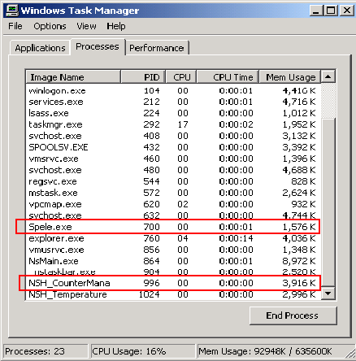
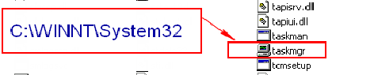

Service History
Subject: After power up handler, Nstaskbar display and SPEL executing, no other display on Monitor
Handler Model: NS-8080 (03-NS8000; S/N: 181634) HMI M9.10-SSY-sp, SPEL CT 3.11ds
Controller: RC520
Date: 29 Apr 2010
Symptom
After power up handler, Nstaskbar display and SPEL executing, no other display on Monitor.
-no response when pressed Ctrl-Alt-Del, unable to trigger Windows task manager
-had to use [Windows] key on keyboard, to use Windows Explorer (Windows key + E)
- uninstall SPEL CT & HMI, restart RC520
-scandisk for HDD, ok
-re-install SPEL CT & HMI, restart RC520
-Still hang at NStask bar after reboot
had to use [Windows] key on keyboard, to use Windows Explorer (Windows key + E), execute 'taskmgr.exe' in C:\WINNT\system32
End task for 'Spele.exe' and 'NSH_CounterMana'


Manual activate SPEL CT, ok
Manual activate NStask bar, encountered many errors:
-A reading error for file [C:¥NS8000¥run¥HandlerCondition.dat][configuration][Handling Mode][Site.Aa]
-A reading error for file [C:¥NS8000¥run¥HandlerCondition.dat][configuration][Handling Mode][Site.Ab]
-A reading error for file [C:¥NS8000¥run¥HandlerCondition.dat][configuration][Handling Mode][Site.Ac]
….
-A reading error for file [C:¥NS8000¥run¥BinAsgnOff.dat][catergory 1][Bin]
-A reading error for file [C:¥NS8000¥run¥BinAsgnOff.dat][catergory 2][Bin]
-A reading error for file [C:¥NS8000¥run¥BinAsgnOff.dat][catergory 3][Bin]
...
-A reading error for file [C:¥NS8000¥run¥BinAsgnOff.dat][I/F Error][Bin]
…..
Action
-Remove setup file T1-C7500-14x14QFP
-select CSP5x5 setup file, restart HMI, ok
-create new setup file Test 64QFN9x9_Hot, running check at 40DegC, ok
-restart RC520 and running check, ok. SR S/N: 011782
Cause
setup file corrupted caused HMI cannot be loaded.
Remarks
When this kind of error happened,
start SPEL manually, then start MMI manually, then delete the current setup file.